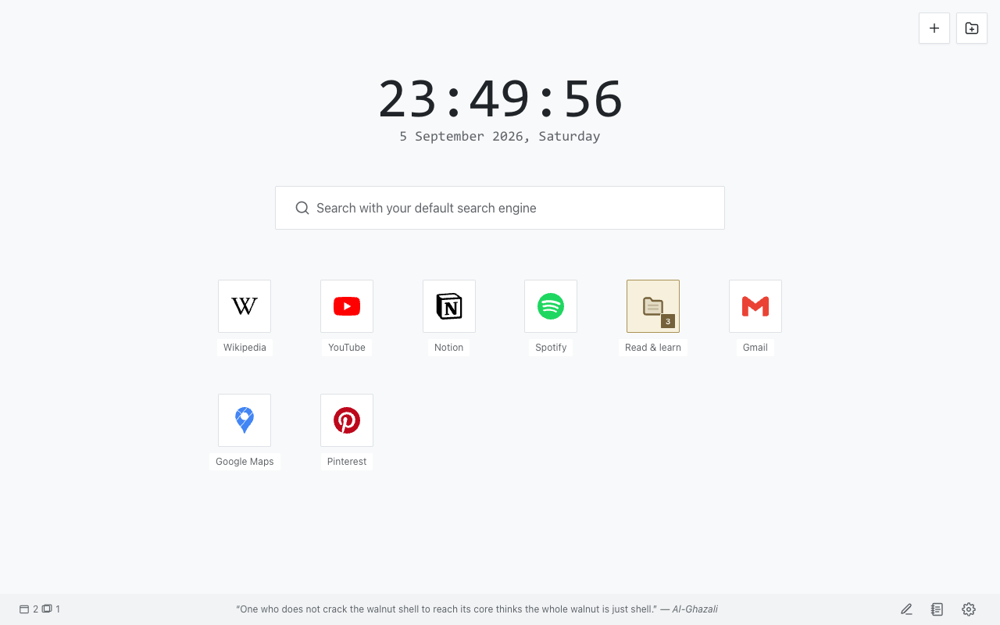
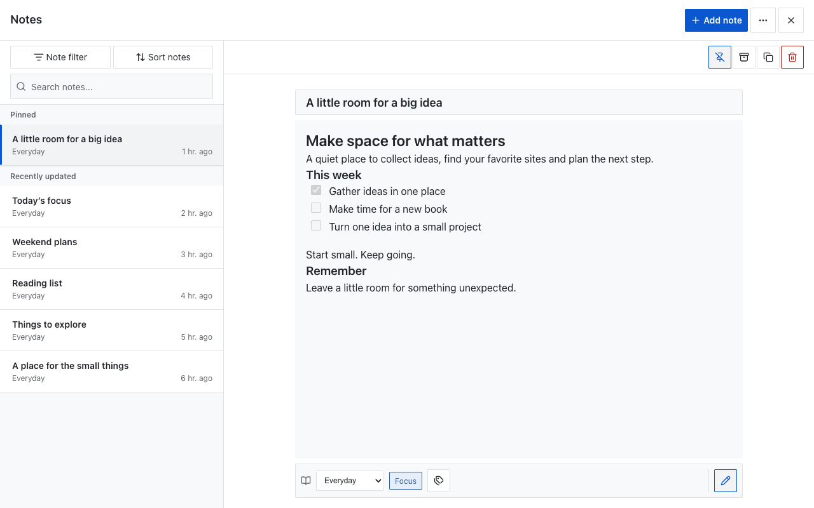
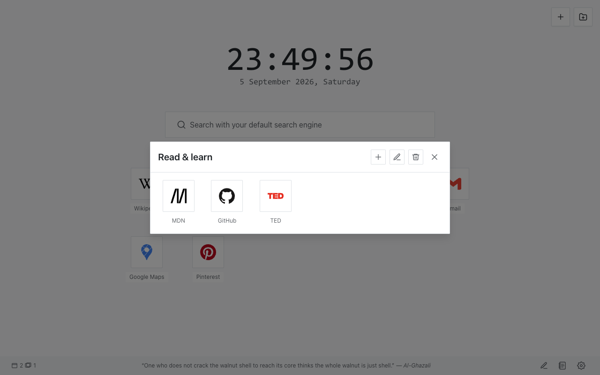
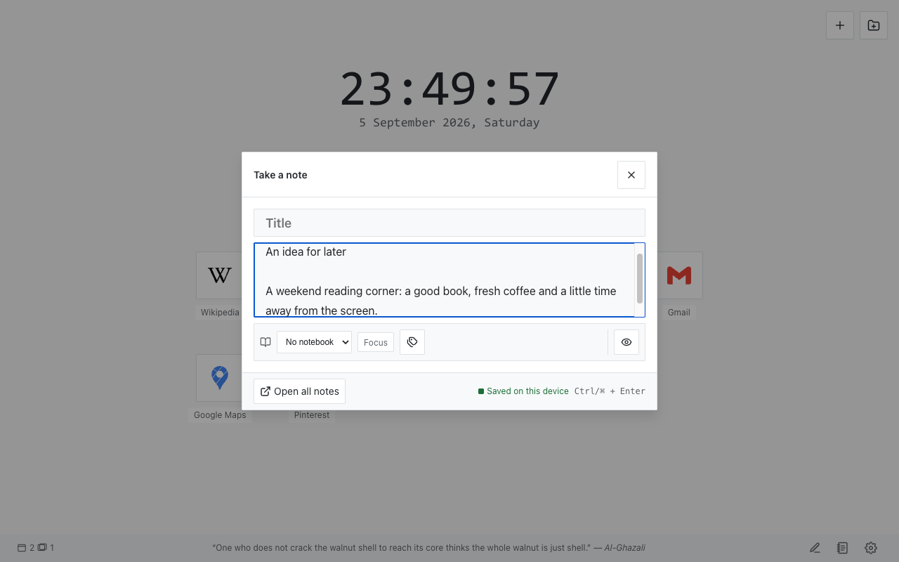
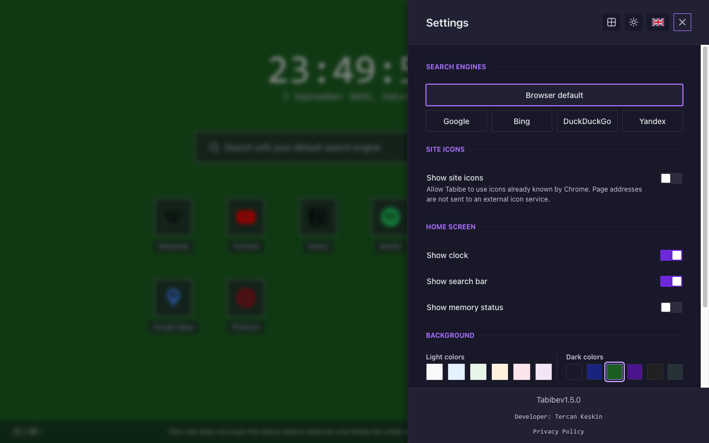

{kind=link}
{kind=link}
Sites, sorted your way
Save shortcuts, group them in folders and reorder them with drag and drop or keyboard actions. Choose bundled icons or optional Chrome site icons.
Version 1.5.0 · Open source
Your favorite sites, everyday notes and next idea — together in a quiet, personal new-tab page.
GitHub download · Install manually in Chrome. A Chrome Web Store listing is not available yet.

New in 1.5.0
Capture a thought without losing your place. Open your notes library when you are ready to organize it.

A few everyday tools, built around your new tab.
Save shortcuts, group them in folders and reorder them with drag and drop or keyboard actions. Choose bundled icons or optional Chrome site icons.
Start with the search engine already selected in Chrome. Explicitly choose an alternative in Tabibe whenever you prefer.
Choose a light or dark theme, a solid background color or a picture from your device. Show or hide the clock and search box.
Export your workspace as a JSON file and preview a backup before restoring it. Keep a separate copy of important notes.
No account, analytics, ads or cloud sync. Workspace data is stored in your browser profile and is not sent to the developer.
Switch languages in Settings. Includes right-to-left Arabic, keyboard controls and layouts for narrower windows.
Open any screenshot to view it at full size.

Folders keep your shortcut grid easy to scan.

Quick capture stays close to the new-tab page.

Appearance, search and optional controls live in Settings.
The interface and bundled privacy policy support all 13 languages. This website is available in English and Turkish.
Download the GitHub release and load the extension into Chrome in a few steps. No account is needed in Tabibe.
Get tabibe-v1.5.0.zip from this release and extract it to a folder you can keep.
Paste the address below into Chrome’s address bar, then enable Developer mode.
chrome://extensions
Choose Load unpacked and select the extracted folder containing manifest.json. Open a new tab to use Tabibe.
Updating an unpacked installation? Export a backup first, replace files in the same extension folder and click Reload in chrome://extensions. Keep that folder in place.
No. The first search option follows Chrome’s existing default through Chrome Search API. You can explicitly select another provider in Tabibe. Older unversioned Tabibe search preferences move once to the browser default.
Notes, shortcuts, settings and background images stay in the local browser profile. Tabibe does not encrypt that storage or exported JSON files. Avoid sensitive information and protect your device and backups. The developer cannot recover your local data remotely.
Removing Tabibe removes its local extension data, including local recovery copies. Export a backup first if you want to keep your workspace. Previously exported files and device backups need to be managed separately.
The new-tab page, notes, bundled icons and privacy policy work offline. Web searches and the websites you open need a connection and follow the destination service’s policies.
{kind=link}
{kind=link}
{kind=link}